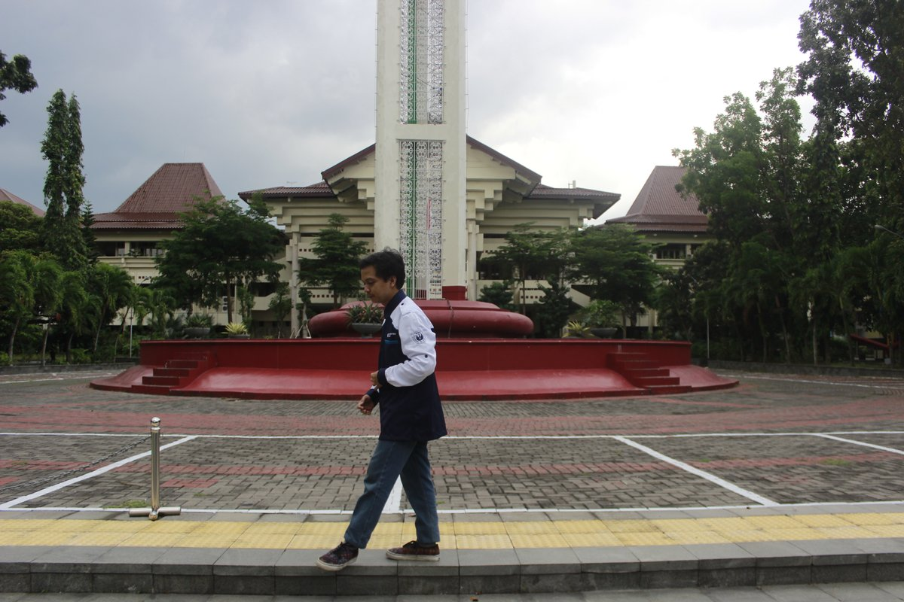
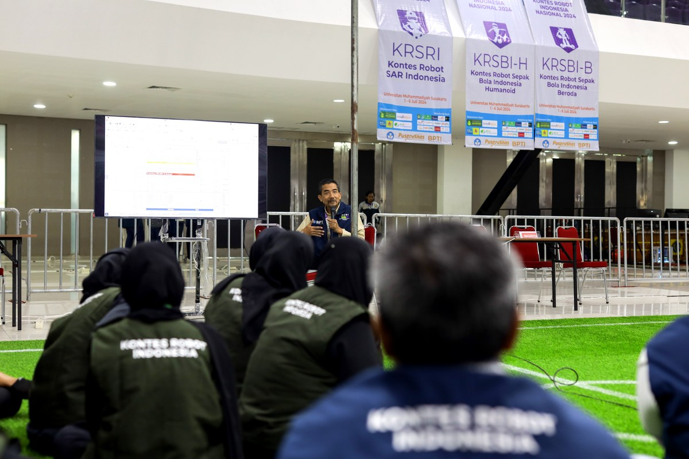
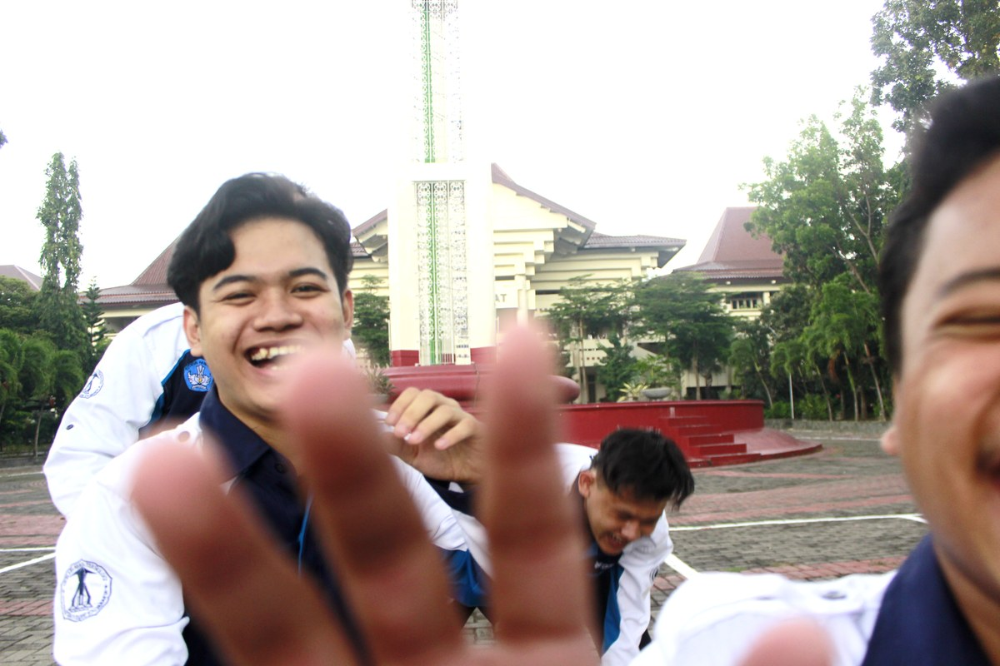
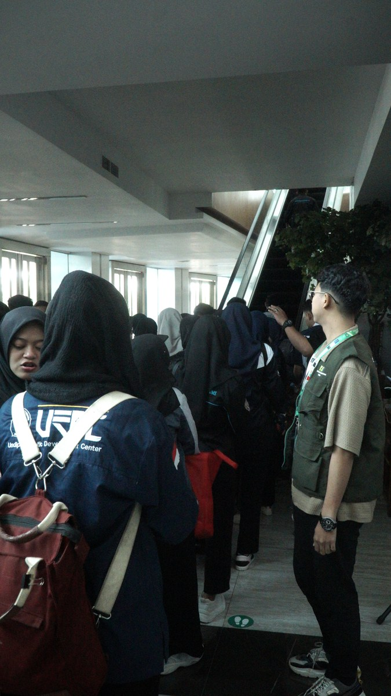

Crafting Intelligent Robots & Embedded Systems
Halo! Saya Tri Wahyu Handoyo, mahasiswa S1 Pendidikan Teknik Mekatronika Universitas Negeri Yogyakarta (UNY). Fokus utama saya mencakup robotika kompetisi (KRTMI & KRAI Puspresnas), embedded IoT (ESP32, STM32, Raspberry Pi), Computer Vision AI, dan desain CAD mekatronika 3D.
Spesialisasi & Keahlian Utama
Embedded & IoT Hardware
Pemrograman C/C++, ESP32, STM32 Microcontroller, Raspberry Pi 5, Modbus, SPI/I2C, Sensor Processing, Simulasi Wokwi.
Robotics & Autonomous System
Kinematika Mecanum Wheel, Algoritma PID Control, Dual Driver TB6612FNG, Navigasi Arena KRTMI & KRAI Puspresnas.
Computer Vision & AI
OpenCV Python, Body Tracking Kinect v1.8, Visual Inspection System, Image Bitmap Processing untuk OLED.
3D CAD & Industrial Automation
Autodesk Inventor, SolidWorks 3D Modeling, PLC Omron CX-One, Pneumatic & ElektroPneumatic, Rapid Prototyping (3D Printing & KiCad PCB).
Stats & Key Achievements
Pencapaian kuantitatif dalam kompetisi nasional, riset karya tulis, dan edukasi publik
Riset Laboratorium & Praktikum Akademik
Pengalaman praktikal dan penguasaan laboratorium mekatronika dari Semester 1 hingga 8 di UNY
Praktik Mikrokontroler & Teknik Antarmuka (System Interfacing)
Pemrograman register & komunikasi serial I2C/SPI/UART pada Arduino, ESP32, dan STM32. Integrasi LCD OLED, keypad, DAC/ADC, dan sensor pengukur suhu/kecepatan.
PLC (Omron CX-One) & ElektroPneumatik Industri
Perancangan diagram ladder PLC Omron CX-Programmer untuk urutan aktuasi silinder pneumatic, relay kontrol industri, timer/counter, dan sensor proximity otomatisasi pabrik.
Praktik Sensor Tranduser & Penginderaan Visual Robot
Karakterisasi sensor jarak Sharp GP, ultrasonic HC-SR04, loadcell weight sensor, serta pengolahan citra digital OpenCV Python untuk penginderaan objek robotika.
Prestasi & Sertifikat Resmi
Koleksi sertifikat penghargaan kejuaraan nasional, Kontes Robot Indonesia Puspresnas, dan sertifikasi organisasi mekatronika UNY

Kontes Robot Tematik Indonesia (KRTMI) Tingkat Nasional
Puspresnas • Balai Pengembangan Talenta Indonesia (BPTI)
Sertifikat penghargaan sebagai Peserta & Finalis Kontes Robot Tematik Indonesia (KRTMI) Tingkat Nasional (Tim Abhinaya UNY).

Kontes Robot Tematik Indonesia (KRTMI) Tingkat Wilayah
Puspresnas • Balai Pengembangan Talenta Indonesia (BPTI)
Sertifikat partisipasi dan prestasi sebagai Peserta & Finalis Kontes Robot Tematik Indonesia (KRTMI) Tingkat Wilayah.

Lomba Essay Ilmiah INESCO VOL 2.0 (UMP 2025)
Universitas Muhammadiyah Purwokerto
Sertifikat penghargaan Juara 1 Tingkat Nasional lewat karya KTI "SEAWARE: Smart Environmental Autonomous Water Cleanup & Monitoring Robot".

Gebyar HIMEPA XXXI 2025 (Esai Nasional UNTAN)
FEB Universitas Tanjungpura (UNTAN)
Sertifikat Juara 1 Nasional lewat karya "TRASHURE-SPHERE: Mesin Sampah Penukar Poin Berbasis IoT dengan Insentif Digital".

Lomba PANCO FISIP UNY 2025
FISIP Universitas Negeri Yogyakarta
Sertifikat Juara 2 Tingkat Nasional lewat karya "Sistem Pemantauan & Pengelolaan Limbah Maritim Berbasis Pelayanan Publik Digital".

Technocorner UGM 2026 - Transporter Robot
KMTETI Universitas Gadjah Mada (UGM)
Sertifikat partisipasi sebagai Peserta cabang lomba Transporter Robot Technocorner UGM 2026.

IC (Introducing Campus Elektro)
Bidang PSDM HME JPTE FT Universitas Negeri Yogyakarta
Sertifikat penghargaan atas kontribusi sebagai Panitia Pelaksana kegiatan IC (Introducing Campus Elektro) HME FT UNY.

OSILASI (Orientasi Lab & Pengembangan Studi)
Bidang PSDM HME JPTE FT Universitas Negeri Yogyakarta
Sertifikat kelulusan kegiatan OSILASI (Orientasi Laboratorium, Keakraban, dan Pengembangan Studi) khusus mahasiswa baru Pendidikan Teknik Elektro FT UNY.

Workshop Perancangan Sirkuit Elektro
HME JPTE FT Universitas Negeri Yogyakarta
Sertifikat kelulusan sebagai Peserta Workshop Perancangan Sirkuit Elektro & Tata Letak Jalur PCB.

Pembekalan Kepemimpinan & Etika Profesi
Universitas Negeri Yogyakarta
Sertifikat kelulusan Peserta Pembekalan Softskill, Etika Profesi Mekatronika, dan Kepemimpinan UNY.
Karya Tulis Ilmiah (KTI) & Publikasi
Publikasi esai ilmiah, gagasan futuristik mekatronika, dan karya tulis pemenang kompetisi nasional
TRASHURE-SPHERE: Mesin Sampah Penukar Poin Berbasis IoT
Inovasi mesin pemilah sampah pintar otomatis berbasis IoT yang mengintegrasikan reward poin digital langsung ke e-wallet pengguna untuk mendukung ekonomi sirkular.
SEAWARE: Smart Environmental Autonomous Water Cleanup & Monitoring Robot
Rancangan robot pembersih & pemantau kualitas air otomatis berbasis twin catamaran hull, sensor multiparameter, dan transmisi telemetry wireless real-time.
Sistem Pemantauan & Pengelolaan Limbah Maritim
Gagasan terpadu integrasi teknologi mekatronika vokasi dengan sistem manajemen pelayanan publik berbasis IoT untuk proteksi ekosistem pesisir maritim.
Robot Evaluasi & Inspeksi Otomatis Berbasis Artificial Intelligence
Perancangan platform inspeksi visual menggunakan sensor penginderaan jauh dan pemrosesan citra AI untuk pengujian kualitas pada fasilitas manufaktur.
Toko & Commercial Unit: Detronics.id
Unit usaha dan toko online mekatronika yang menyediakan komponen elektronik terapan, mikrokontroler, sensor robotika, dan jasa custom PCB
Detronics.id Store
Pusat Komponen Mekatronika, Sensor Robotika, & Custom Hardware PCB
Didirikan oleh Tri Wahyu Handoyo sebagai solusi penyediaan komponen siap pakai untuk mahasiswa riset robotika, praktisi embedded systems, dan hobiis elektronik di seluruh Indonesia.
Mikrokontroler & Boards
STM32 Nucleo, ESP32 WROOM, Arduino Nano, Raspberry Pi Pico & Programmer Debugger ST-Link.
Sensor & Aktuator Robot
Incremental Rotary Encoder, Gyro MPU6050, Suction Cup Vacuum, Servo Motors & Driver Motor High Power.
Jasa Custom PCB
Desain skematik & layout jalur PCB (Eagle/KiCAD), fabrikasi presisi, dan perakitan komponen SMD/DIP.
Modul Daya & IoT
Step-Down Buck Regulator, BMS LiPo Battery Charger, Transceiver Wireless NRF24L01 & Modul Relay Industrial.
Interactive 3D CAD Robot Viewer
Putar, zoom, dan inspeksi secara 3D interaktif hasil perancangan mekatronika CAD (LKTI & Kontes Robot Indonesia)
Robot Pemilah Sampah KRTMI 2024 (Chassis 3D)
Desain CAD 3D robot pemilah sampah otomatis dengan 4 roda omni-directional, mekrab pneumatik, & lengan suction cup.
Featured Projects
Proyek unggulan pembuatan robotik, sistem kontrol terbenam, dan platform simulasi
Abhinaya KRTMI 2024 - Robot Pemilah Sampah Otomatis
Sistem robotik pemilah sampah otomatis menggunakan 4-wheel omni-directional drive, Mini PC image processing webcam, pneumatik suction cup, & mikrokontroler STM32/ESP32.
SEAWARE - Smart Environmental Water Robot
Robot pemantau & pembersih limbah perairan otomatis berbasis twin catamaran hull, sensor turbidity/pH/suhu, modul telemetry wireless, & panel surya.
Transporter Robot Omni-Directional UGM 2026
Robot pengangkut barang otomatis dengan chassis 4 roda mecanum wheel, sensor navigasi linier encoder, dan forklift clamp mekanik.
Wokwi Embedded Simulations
Simulasi pemrograman sirkuit mikrokontroler interaktif yang dapat langsung diuji di browser
ESP32 Dual Motor Driver TB6612FNG
Simulasi kontrol kecepatan & arah putar 2 motor DC menggunakan PWM ESP32 & H-Bridge Driver.
Buka Simulasi WokwiOLED I2C Display Bitmap Engine
Simulasi rendering logo & grafik animasi bitmap pada layar OLED SSD1306 via komunikasi I2C.
Buka Simulasi WokwiESP32 Wi-Fi Telemetry & Sensor Suite
Simulasi pengiriman data sensor suhu/kelembaban DHT22 ke dashboard IoT web server.
Buka Simulasi WokwiGaleri Dokumentasi Riset Robotika & Kegiatan
Dokumentasi foto resmi riset Kontes Robot Indonesia (KRTMI 2024 Abhinaya UNY), perancangan mekatronika, dan pengujian lapangan

Foto Tim Abhinaya UNY - KRTMI 2024
Waktu: Maret - Juli 2024
Sesi foto resmi Tim Abhinaya UNY divisi Kontes Robot Tematik Indonesia (KRTMI) Puspresnas 2024.

Pengujian Arm Gripper & Pneumatik Robot
Waktu: April 2024
Proses perakitan & kalibrasi lengan robot pemilah sampah otomatis berbasis suction cup & pneumatik.

Kalibrasi Sensor Komputer Visi & Mini PC
Waktu: Mei 2024
Pengujian deteksi jenis sampah (plastik, logam, daun, botol) menggunakan webcam & Mini PC.

Simulasi Arena Kontes Robot Tematik UNY
Waktu: Mei 2024
Simulasi pergerakan 4-wheel mecanum robot pengumpan & pemilah pada konveyor getar arena KRTMI.

Kontingen Tim Robotika UNY Puspresnas
Waktu: Juni 2024
Dokumentasi kebersamaan kontingen Tim Robotika UNY divisi KRTMI menjelang kompetisi nasional.

Evaluasi & Briefing Tim Abhinaya UNY
Waktu: Juli 2024
Sesi evaluasi mekanik, elektrikal, dan strategi pertandingan oleh dosen pembimbing & tim.

Perancangan Jalur PCB & Wiring Harness
Waktu: Maret 2024
Perancangan wiring harness, power distribution board LiPo 6S/3S, dan driver motor PG45/PG28.

Uji Coba Laju Konveyor & Kecepatan Robot
Waktu: Juni 2024
Pengujian presisi robot mengambil sampah pada laju konveyor 50 cm/menit hingga 200 cm/menit.
Let's Connect & Collaborate!
Tertarik berkolaborasi dalam riset robotika, konsultasi hardware mekatronika, desain custom PCB, atau project embedded IoT? Jangan ragu untuk menghubungi saya!
Robotics Video & Reels Showcase
Demonstrasi robotika, riset mekatronika, dan konten edukasi teknologi dari channel YouTube & Instagram Reels @triwahyu45
@detronics.id
Edukasi & Project Mekatronika, Elektronika, dan IoT
Platform edukasi mekatronika & elektronika terapan yang mengulas perancangan sirkuit PCB, pemrograman mikrokontroler STM32/ESP32, dan robotika.
Kunjungi @detronics.id@triwahyu45 (Reels Showcase)
Reels Robotika, Kontes Robot Indonesia & Dokumentasi Riset
Dokumentasi perjalanan riset Kontes Robot Indonesia (KRI KRTMI), pengujian robot transporter Technocorner UGM, dan aktivitas mekatronika UNY.
Lihat Semua Reels @triwahyu45Featured Instagram Reels (Robotics & Mechatronics)
Riset & Test Run Robot KRTMI 2024
Pengujian robot pemilah sampah otomatis Tim Abhinaya UNY untuk Kontes Robot Tematik Indonesia.
Tonton di Instagram ReelsTransporter Robot Omni-Directional
Pergerakan mekanik 4 roda mecanum & gripper pneumatik robot transporter Technocorner UGM.
Tonton di Instagram ReelsPerancangan Jalur PCB & Sensor Microelectronics
Tutorial perancangan skematik PCB dan pengujian sensor industri mekatronika berbasis STM32.
Tonton di Instagram ReelsFeatured YouTube Videos (Riset & Inovasi Robot)
Demonstrasi Robot Pemilah Sampah KRTMI 2024
Pengujian mekanisme arm gripper suction cup & sistem komputer visi pemilah material sampah otomatis.
Buka Channel YouTubeSEAWARE: Smart Environmental Autonomous Water Robot
Presentasi & simulasi sistem pemantauan limbah perairan otomatis berbasis IoT & sensor multiparameter.
Buka Channel YouTubePlaylist Video Robotika & Mekatronika Tri Wahyu